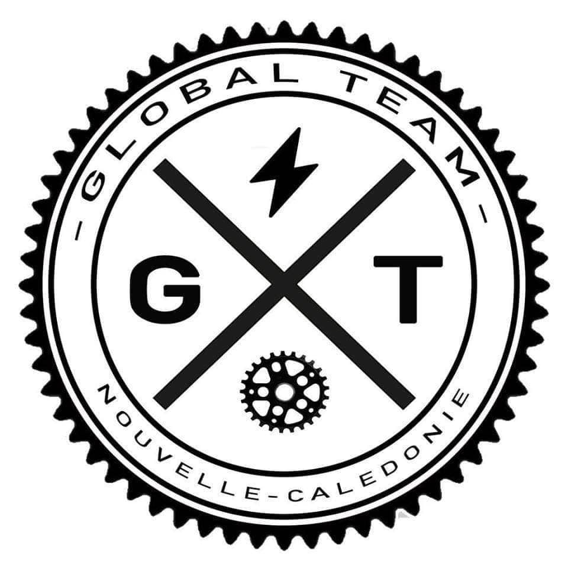
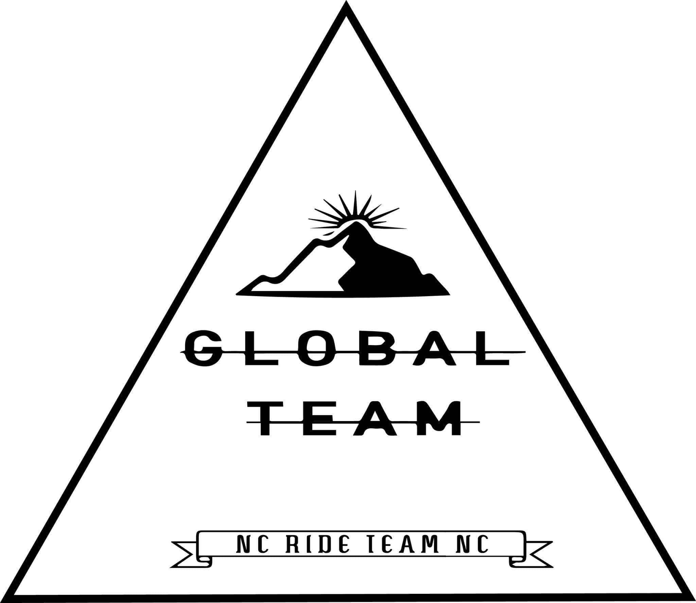

La Tina à vélo est un évènnement organisé par Turtle.com sur toute la zone cycliste de Tina c'est-à-dire les boucles et le skate park.
Durant la journée on peut trouver divers ateliers, stands, et autres annimations.
Pour notre part, nous avons initié durant toute la matiné et le début de l'après-midi les jeunes et adultes venant nous voir pour découvrir le bmx puis,
en fin d'après-midi, nous avons fait un show de démonstration.